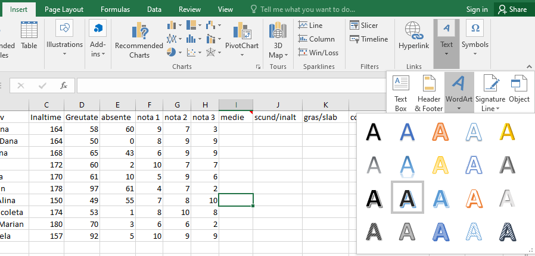
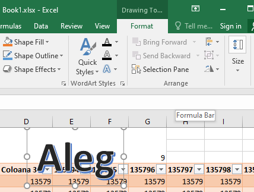
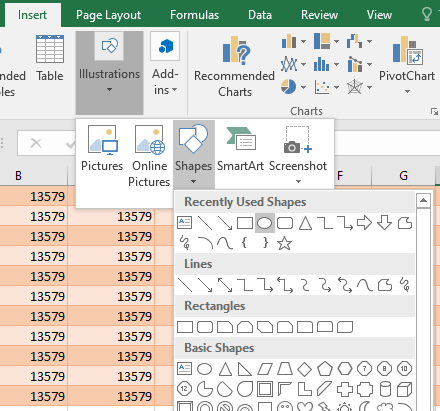
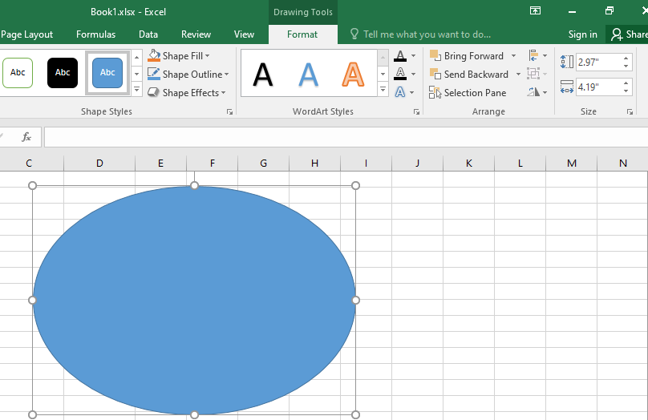
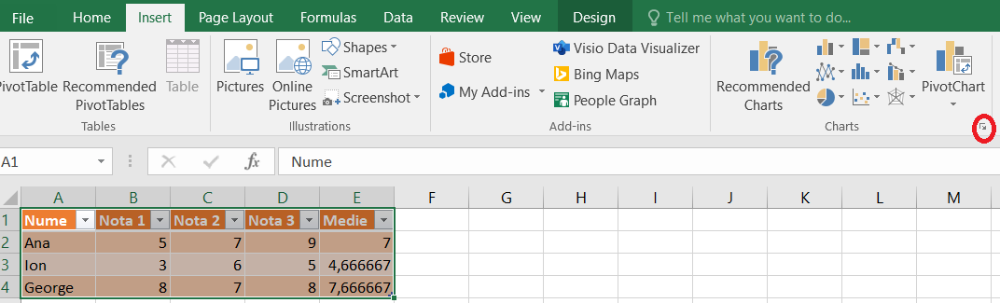
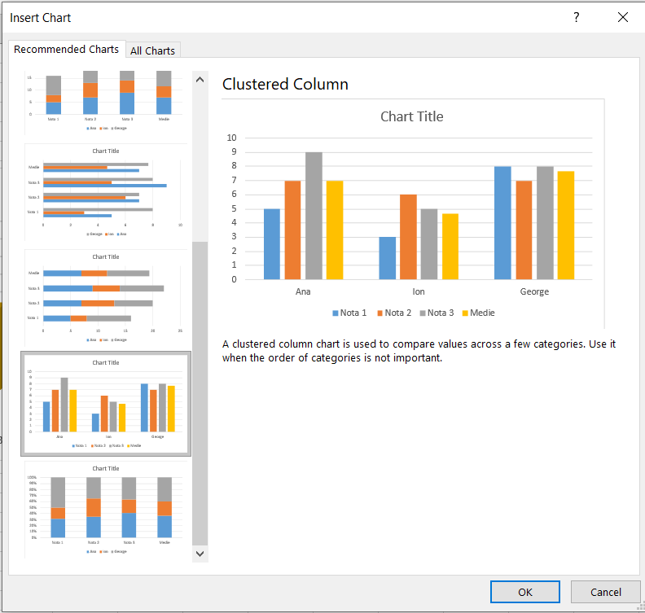
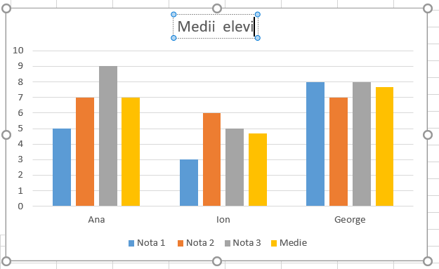
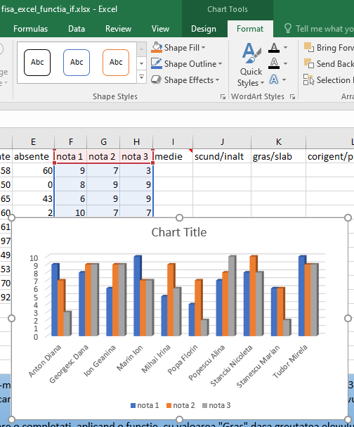

F I Ş A Nr. 4
Inserarea diagramelor
1. Adăugarea unui text WordArt.
- În fila Inserare (Insert), în grupul Legături(Links), faceţi clic pe Text → WordArt apoi faceţi clic pe stilul dorit:

- Introduceţi textul dorit, poziţionaţi şi dimensionaţi blocul WordArt.
- Pentru a adăuga formatări, selectaţi fila Formatare(Format):

2. Adăugarea unei forme(shapes).
- În fila Inserare (Insert), în grupul Ilustraţii (Illustration), faceţi clic pe Shapes apoi faceţi clic pe forma dorită din listă şi daţi OK:

- Selectaţi forma, în fila Formatare (Format) daţi clic pe Umplere formă (Shape Fill), selectaţi din listă Imagine (Picture…), clic pe imaginea dorită şi daţi clic pe butonul Insert

3. Crearea diagramelor în Excel.
- Selectaţi tabelul sau porţiunea de tabel pentru care vreţi să realizaţi o diagramă
- În fila Inserare (Insert), în grupul Diagrame (Charts), faceţi clic pe grupul de diagrame dorit (Column, Line, Pie, Area, Scatter sau Other Chart) şi din lista afişată alegem tipul de diagramă dorit.
- Sau click în dreapta jos în grupul Diagrame (Charts) (cerculeţul roşu):

Se alege tipul de diagrama dorit:

Click pe OK :

- Pentru a adăuga formatări, selectaţi fila Formatare(Format) şi folosind uneltele din această filă aveţi posibilitatea să:
- Umpleţi elementele diagramei: utilizaţi culori, texturi, imagini şi degrade-uri de umplere pentru a atrage atenţia asupra anumitor elemente din diagramă.
- Modificaţi conturul elementelor diagramei: utilizaţi culori, stiluri de linii şi grosimi de linie pentru a accentua elemente din diagramă.
- Adăugaţi efecte speciale la elementele diagramei: aplicaţi efecte speciale, cum ar fi cele de umbră, reflexie, strălucire, muchii atenuate, teşitură şi rotaţii 3-D pentru formele elementelor diagramei, care oferă acesteia un aspect finisat.
- Formataţi textul şi numerele: aveţi posibilitatea să formataţi textul şi numerele în titluri, etichete şi casete text într-o diagramă aşa cum aţi face cu text şi numere într-o foaie de lucru. Pentru a face ca textul şi numerele să iasă în evidenţă, aveţi posibilitatea să aplicaţi şi stiluri WordArt.

6. APLICAŢIE:
- Lansaţi aplicaţia Microsoft Office Excel;
- Realizaţi un tabel cu orarul clasei;
- Modificaţi lăţimea coloanelor la 40;
- Setaţi înălţimea rândurilor de mărime 25
- Adăugaţi o coloană în faţa primei coloane în care scrieţi intervalul orar;
- Formataţi textul folosind diferite tipuri şi mărimi de font, diferite efecte (bold, italic, underline), diferite culori pentru fundal şi font în primele trei coloane;
- Borduraţi tabelul şi redenumiţi foaia de calcul cu numele ORAR
- Adăugaţi o nouă foaie de calcul cu numele CHELTUIELI;
- Editaţi tabelul de calcul de mai jos:

- În celula E4 va fi scrisă formula =D4-C4;
- Formula din E4 va fi translatată (copiată) şi pentru celulele E5 şi E6;
- În celula G4 va fi scrisă formula =E4*F4;
- Formula din G4 va fi translatată (copiată) şi pentru celulele G5 – G8;
- În celula G9 va fi aplicată funcţia SUM;
- Adăugaţi acestui tabel un titlu scris în WordArt;
- Creaţi o diagramă folosind datele din coloanele "UTILITATI", "P/U" şi "VALOARE";
- Formataţi diagrama pentru a obţine un aspect plăcut;
- Adăugaţi o formă SmartArt pe care o umpleti cu o imagine;
- Salvaţi fişierul cu numele REGISTRU CHELTUIELI.